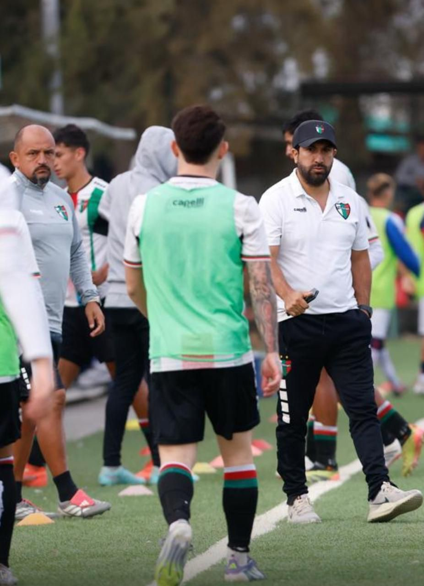

Scouting
Jefe de Scouting de Palestino
Esta área se enfoca en observar jugadores, analizar sus características y reconocer su potencial futbolístico.
- Habilidad
- Velocidad
- Fenotipo (estatura) y aspectos físicos
- Inteligencia
- Lateralidad (zurdos y derechos)
- Realidad
- Competitivo
- Jugador de origen palestino